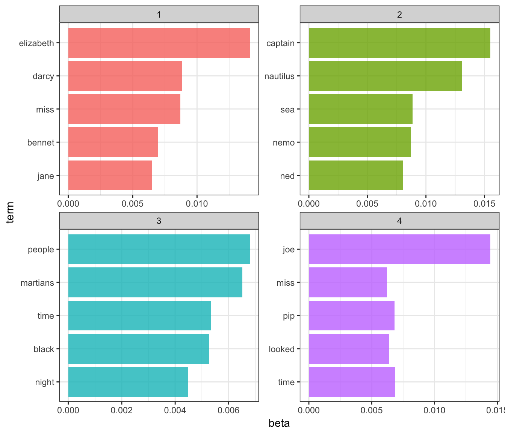
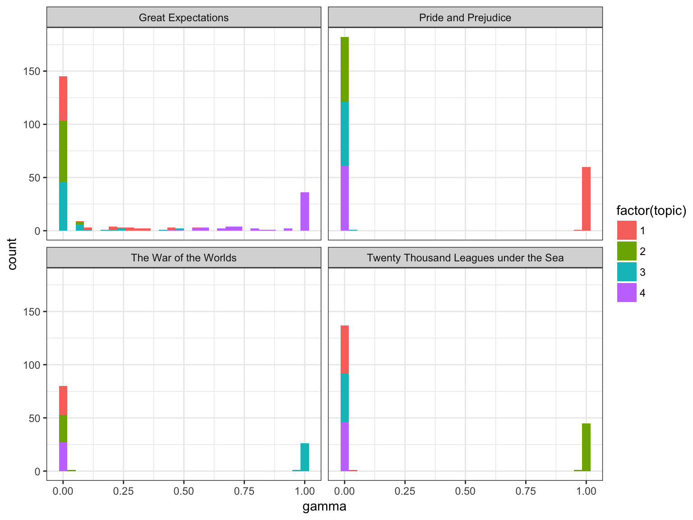
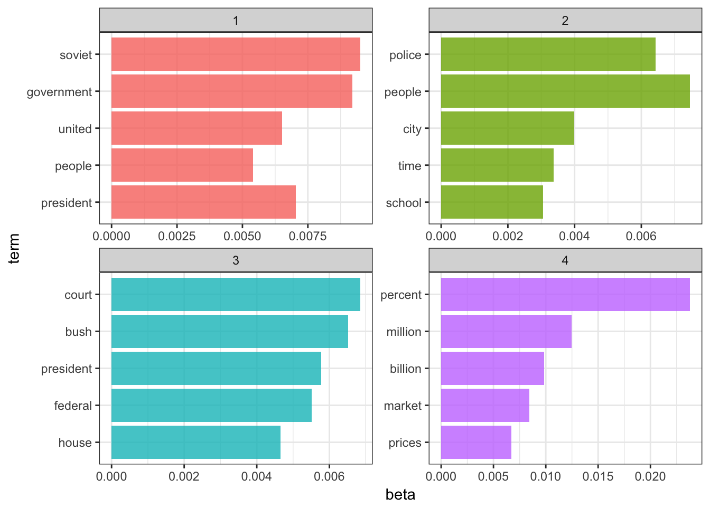
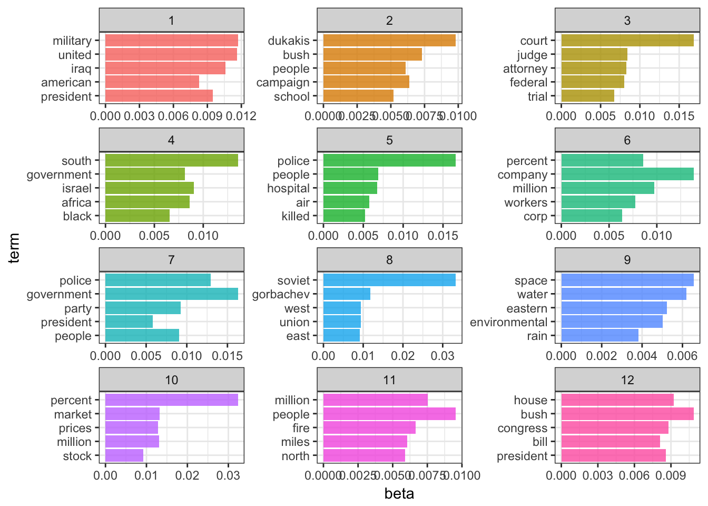
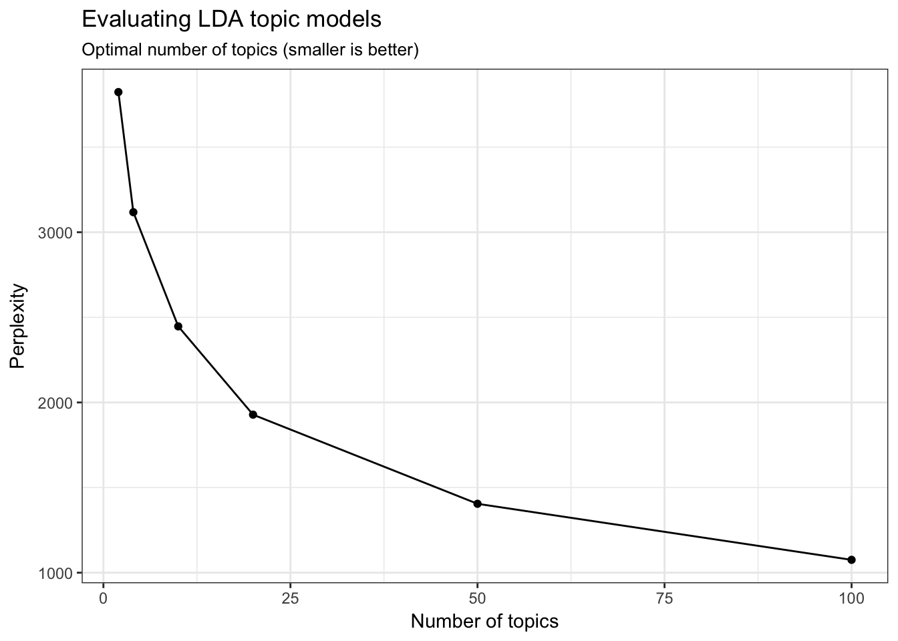
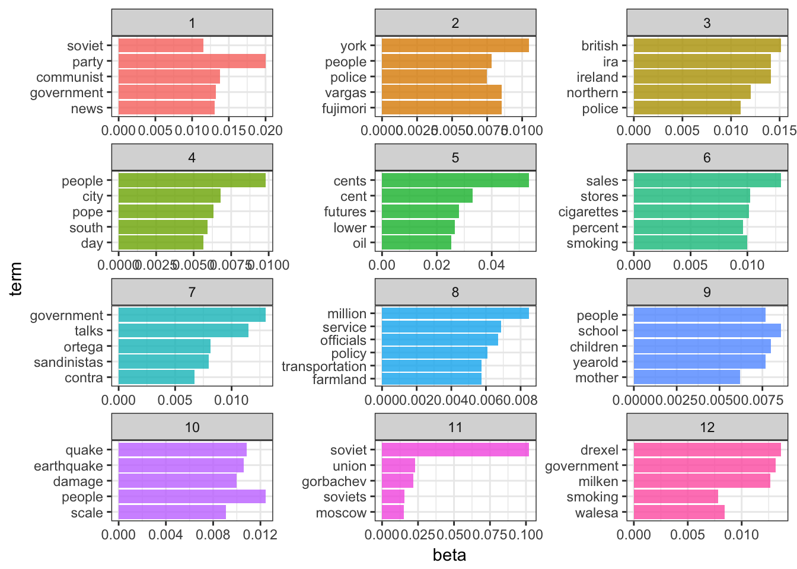

This content is from the fall 2016 version of this course. Please go here for the most recent version.
library(tidyverse)
theme_set(theme_bw())Typically when we search for information online, there are two primary methods:
An alternative method would be to search and explore documents via themes. For instance, David Blei proposes searching through the complete history of the New York Times. Broad themes may relate to the individual sections in the paper (foreign policy, national affairs, sports) but there might be specific themes within or across these sections (Chinese foreign policy, the conflict in the Middle East, the U.S.’s relationship with Russia). If the documents are grouped by these themes, we could track the evolution of the NYT’s reporting on these issues over time, or examine how discussion of different themes intersects.
In order to do this, we would need detailed information on the theme of every article. Hand-coding this corpus would be exceedingly time-consuming, not to mention would requiring knowing the thematic structure of the documents before one even begins coding. For the vast majority of corpa, this is not a feasible approach.
Instead, we can use probabilistic topic models, statistical algorithms that analyze words in original text documents to uncover the thematic structure of the both the corpus and individual documents themselves. They do not require any hand coding or labeling of the documents prior to analysis - instead, the algorithms emerge from the analysis of the text.
LDA assumes that each document in a corpus contains a mix of topics that are found throughout the entire corpus. The topic structure is hidden - we can only observe the documents and words, not the topics themselves. Because the structure is hidden (also known as latent), this method seeks to infer the topic structure given the known words and documents.
Suppose you have the following set of sentences:
Latent Dirichlet allocation is a way of automatically discovering topics that these sentences contain. For example, given these sentences and asked for 2 topics, LDA might produce something like
Sentence 5: 60% Topic A, 40% Topic B
Topic B: 20% chinchillas, 20% kittens, 20% cute, 15% hamster, …
You could infer that topic A is a topic about food, and topic B is a topic about cute animals. But LDA does not explicitly identify topics in this manner. All it can do is tell you the probability that specific words are associated with the topic.
LDA represents documents as mixtures of topics that spit out words with certain probabilities. It assumes that documents are produced in the following fashion: when writing each document, you
Assuming this generative model for a collection of documents, LDA then tries to backtrack from the documents to find a set of topics that are likely to have generated the collection.
How could we have generated the sentences in the previous example? When generating a document \(D\):
So the document generated under the LDA model will be “broccoli panda adorable cherries eating” (remember that LDA uses a bag-of-words model).
Now suppose you have a set of documents. You’ve chosen some fixed number of \(K\) topics to discover, and want to use LDA to learn the topic representation of each document and the words associated to each topic. How do you do this? One way (known as collapsed Gibbs sampling) is the following:
LDA can be useful if the topic structure of a set of documents is known a priori. For instance, suppose you have four books:
A vandal has broken into your home and torn the books into individual chapters, and left them in one large pile. We can use LDA and topic modeling to discover how the chapters relate to distinct topics (i.e. books).
We’ll retrieve these four books using the gutenbergr package:
titles <- c("Twenty Thousand Leagues under the Sea", "The War of the Worlds",
"Pride and Prejudice", "Great Expectations")
library(gutenbergr)
books <- gutenberg_works(title %in% titles) %>%
gutenberg_download(meta_fields = "title")## Determining mirror for Project Gutenberg from http://www.gutenberg.org/robot/harvest## Using mirror http://www.gutenberg.lib.md.usAs pre-processing, we divide these into chapters, use tidytext’s unnest_tokens to separate them into words, then remove stop_words. We’re treating every chapter as a separate “document”, each with a name like Great Expectations_1 or Pride and Prejudice_11.
library(tidytext)
library(stringr)
by_chapter <- books %>%
group_by(title) %>%
mutate(chapter = cumsum(str_detect(text, regex("^chapter ", ignore_case = TRUE)))) %>%
ungroup() %>%
filter(chapter > 0)
by_chapter_word <- by_chapter %>%
unite(title_chapter, title, chapter) %>%
unnest_tokens(word, text)
word_counts <- by_chapter_word %>%
anti_join(stop_words) %>%
count(title_chapter, word, sort = TRUE) %>%
ungroup()## Joining, by = "word"word_counts## # A tibble: 104,721 × 3
## title_chapter word n
## <chr> <chr> <int>
## 1 Great Expectations_57 joe 88
## 2 Great Expectations_7 joe 70
## 3 Great Expectations_17 biddy 63
## 4 Great Expectations_27 joe 58
## 5 Great Expectations_38 estella 58
## 6 Great Expectations_2 joe 56
## 7 Great Expectations_23 pocket 53
## 8 Great Expectations_15 joe 50
## 9 Great Expectations_18 joe 50
## 10 The War of the Worlds_16 brother 50
## # ... with 104,711 more rowstopicmodels packageRight now this data frame is in a tidy form, with one-term-per-document-per-row. However, the topicmodels package requires a DocumentTermMatrix (from the tm package). We can cast a one-token-per-row table into a DocumentTermMatrix with tidytext’s cast_dtm:
chapters_dtm <- word_counts %>%
cast_dtm(title_chapter, word, n)
chapters_dtm## <<DocumentTermMatrix (documents: 193, terms: 18215)>>
## Non-/sparse entries: 104721/3410774
## Sparsity : 97%
## Maximal term length: 19
## Weighting : term frequency (tf)Now we are ready to use the topicmodels package to create a four topic LDA model.
library(topicmodels)
chapters_lda <- LDA(chapters_dtm, k = 4, control = list(seed = 1234))
chapters_lda## A LDA_VEM topic model with 4 topics.seed = 1234 sets the starting point for the random iteration process. If we don’t set a consistent seed, each time we run the script we may estimate slightly different modelsNow tidytext gives us the option of returning to a tidy analysis, using the tidy and augment verbs borrowed from the broom package. In particular, we start with the tidy verb.
library(tidytext)
chapters_lda_td <- tidy(chapters_lda)
chapters_lda_td## # A tibble: 72,860 × 3
## topic term beta
## <int> <chr> <dbl>
## 1 1 joe 5.830326e-17
## 2 2 joe 3.194447e-57
## 3 3 joe 4.162676e-24
## 4 4 joe 1.445030e-02
## 5 1 biddy 7.846976e-27
## 6 2 biddy 4.672244e-69
## 7 3 biddy 2.259711e-46
## 8 4 biddy 4.767972e-03
## 9 1 estella 3.827272e-06
## 10 2 estella 5.316964e-65
## # ... with 72,850 more rowsNotice that this has turned the model into a one-topic-per-term-per-row format. For each combination the model has beta (\(\beta\)), the probability of that term being generated from that topic.
We could use dplyr’s top_n to find the top 5 terms within each topic:
top_terms <- chapters_lda_td %>%
group_by(topic) %>%
top_n(5, beta) %>%
ungroup() %>%
arrange(topic, -beta)
top_terms## # A tibble: 20 × 3
## topic term beta
## <int> <chr> <dbl>
## 1 1 elizabeth 0.014107538
## 2 1 darcy 0.008814258
## 3 1 miss 0.008706741
## 4 1 bennet 0.006947431
## 5 1 jane 0.006497512
## 6 2 captain 0.015507696
## 7 2 nautilus 0.013050048
## 8 2 sea 0.008850073
## 9 2 nemo 0.008708397
## 10 2 ned 0.008030799
## 11 3 people 0.006797400
## 12 3 martians 0.006512569
## 13 3 time 0.005347115
## 14 3 black 0.005278302
## 15 3 night 0.004483143
## 16 4 joe 0.014450300
## 17 4 time 0.006847574
## 18 4 pip 0.006817363
## 19 4 looked 0.006365257
## 20 4 miss 0.006228387This model lends itself to a visualization:
top_terms %>%
mutate(term = reorder(term, beta)) %>%
ggplot(aes(term, beta, fill = factor(topic))) +
geom_bar(alpha = 0.8, stat = "identity", show.legend = FALSE) +
facet_wrap(~ topic, scales = "free") +
coord_flip()
LDA() does not assign any label to each topic. They are simply topics 1, 2, 3, and 4. We can infer these are associated with each book, but it is merely our inference.Each chapter was a “document” in this analysis. Thus, we may want to know which topics are associated with each document. Can we put the chapters back together in the correct books?
chapters_lda_gamma <- tidy(chapters_lda, matrix = "gamma")
chapters_lda_gamma## # A tibble: 772 × 3
## document topic gamma
## <chr> <int> <dbl>
## 1 Great Expectations_57 1 1.351886e-05
## 2 Great Expectations_7 1 1.470726e-05
## 3 Great Expectations_17 1 2.117127e-05
## 4 Great Expectations_27 1 1.919746e-05
## 5 Great Expectations_38 1 3.544403e-01
## 6 Great Expectations_2 1 1.723723e-05
## 7 Great Expectations_23 1 5.507241e-01
## 8 Great Expectations_15 1 1.682503e-02
## 9 Great Expectations_18 1 1.272044e-05
## 10 The War of the Worlds_16 1 1.084337e-05
## # ... with 762 more rowsSetting matrix = "gamma" returns a tidied version with one-document-per-topic-per-row. Now that we have these document classifiations, we can see how well our unsupervised learning did at distinguishing the four books. First we re-separate the document name into title and chapter:
chapters_lda_gamma <- chapters_lda_gamma %>%
separate(document, c("title", "chapter"), sep = "_", convert = TRUE)
chapters_lda_gamma## # A tibble: 772 × 4
## title chapter topic gamma
## * <chr> <int> <int> <dbl>
## 1 Great Expectations 57 1 1.351886e-05
## 2 Great Expectations 7 1 1.470726e-05
## 3 Great Expectations 17 1 2.117127e-05
## 4 Great Expectations 27 1 1.919746e-05
## 5 Great Expectations 38 1 3.544403e-01
## 6 Great Expectations 2 1 1.723723e-05
## 7 Great Expectations 23 1 5.507241e-01
## 8 Great Expectations 15 1 1.682503e-02
## 9 Great Expectations 18 1 1.272044e-05
## 10 The War of the Worlds 16 1 1.084337e-05
## # ... with 762 more rowsThen we examine what fraction of chapters we got right for each:
ggplot(chapters_lda_gamma, aes(gamma, fill = factor(topic))) +
geom_histogram() +
facet_wrap(~ title, nrow = 2)## `stat_bin()` using `bins = 30`. Pick better value with `binwidth`.
We notice that almost all of the chapters from Pride and Prejudice, War of the Worlds, and Twenty Thousand Leagues Under the Sea were uniquely identified as a single topic each.
chapter_classifications <- chapters_lda_gamma %>%
group_by(title, chapter) %>%
top_n(1, gamma) %>%
ungroup() %>%
arrange(gamma)
chapter_classifications## # A tibble: 193 × 4
## title chapter topic gamma
## <chr> <int> <int> <dbl>
## 1 Great Expectations 54 3 0.4803234
## 2 Great Expectations 22 4 0.5356506
## 3 Great Expectations 31 4 0.5464851
## 4 Great Expectations 23 1 0.5507241
## 5 Great Expectations 33 4 0.5700737
## 6 Great Expectations 47 4 0.5802089
## 7 Great Expectations 56 4 0.5984806
## 8 Great Expectations 38 4 0.6455341
## 9 Great Expectations 11 4 0.6689600
## 10 Great Expectations 44 4 0.6777974
## # ... with 183 more rowsWe can determine this by finding the consensus book for each, which we note is correct based on our earlier visualization:
book_topics <- chapter_classifications %>%
count(title, topic) %>%
top_n(1, n) %>%
ungroup() %>%
transmute(consensus = title, topic)
book_topics## # A tibble: 4 × 2
## consensus topic
## <chr> <int>
## 1 Great Expectations 4
## 2 Pride and Prejudice 1
## 3 The War of the Worlds 3
## 4 Twenty Thousand Leagues under the Sea 2Then we see which chapters were misidentified:
chapter_classifications %>%
inner_join(book_topics, by = "topic") %>%
count(title, consensus) %>%
knitr::kable()| title | consensus | n |
|---|---|---|
| Great Expectations | Great Expectations | 57 |
| Great Expectations | Pride and Prejudice | 1 |
| Great Expectations | The War of the Worlds | 1 |
| Pride and Prejudice | Pride and Prejudice | 61 |
| The War of the Worlds | The War of the Worlds | 27 |
| Twenty Thousand Leagues under the Sea | Twenty Thousand Leagues under the Sea | 46 |
We see that only a few chapters from Great Expectations were misclassified.
augmentOne important step in the topic modeling expectation-maximization algorithm is assigning each word in each document to a topic. The more words in a document are assigned to that topic, generally, the more weight (gamma) will go on that document-topic classification.
We may want to take the original document-word pairs and find which words in each document were assigned to which topic. This is the job of the augment verb.
assignments <- augment(chapters_lda, data = chapters_dtm)We can combine this with the consensus book titles to find which words were incorrectly classified.
assignments <- assignments %>%
separate(document, c("title", "chapter"), sep = "_", convert = TRUE) %>%
inner_join(book_topics, by = c(".topic" = "topic"))
assignments## # A tibble: 104,721 × 6
## title chapter term count .topic consensus
## <chr> <int> <chr> <dbl> <dbl> <chr>
## 1 Great Expectations 57 joe 88 4 Great Expectations
## 2 Great Expectations 7 joe 70 4 Great Expectations
## 3 Great Expectations 17 joe 5 4 Great Expectations
## 4 Great Expectations 27 joe 58 4 Great Expectations
## 5 Great Expectations 2 joe 56 4 Great Expectations
## 6 Great Expectations 23 joe 1 4 Great Expectations
## 7 Great Expectations 15 joe 50 4 Great Expectations
## 8 Great Expectations 18 joe 50 4 Great Expectations
## 9 Great Expectations 9 joe 44 4 Great Expectations
## 10 Great Expectations 13 joe 40 4 Great Expectations
## # ... with 104,711 more rowsWe can, for example, create a “confusion matrix” using dplyr’s count and tidyr’s spread:
assignments %>%
count(title, consensus, wt = count) %>%
spread(consensus, n, fill = 0) %>%
knitr::kable()| title | Great Expectations | Pride and Prejudice | The War of the Worlds | Twenty Thousand Leagues under the Sea |
|---|---|---|---|---|
| Great Expectations | 49770 | 3876 | 1845 | 77 |
| Pride and Prejudice | 1 | 37229 | 7 | 5 |
| The War of the Worlds | 0 | 0 | 22561 | 7 |
| Twenty Thousand Leagues under the Sea | 0 | 5 | 0 | 39629 |
We notice that almost all the words for Pride and Prejudice, Twenty Thousand Leagues Under the Sea, and War of the Worlds were correctly assigned, while Great Expectations had a fair amount of misassignment.
What were the most commonly mistaken words?
wrong_words <- assignments %>%
filter(title != consensus)
wrong_words## # A tibble: 4,535 × 6
## title chapter term count .topic
## <chr> <int> <chr> <dbl> <dbl>
## 1 Great Expectations 38 brother 2 1
## 2 Great Expectations 22 brother 4 1
## 3 Great Expectations 23 miss 2 1
## 4 Great Expectations 22 miss 23 1
## 5 Twenty Thousand Leagues under the Sea 8 miss 1 1
## 6 Great Expectations 31 miss 1 1
## 7 Great Expectations 5 sergeant 37 1
## 8 Great Expectations 46 captain 1 2
## 9 Great Expectations 32 captain 1 2
## 10 The War of the Worlds 17 captain 5 2
## # ... with 4,525 more rows, and 1 more variables: consensus <chr>wrong_words %>%
count(title, consensus, term, wt = count) %>%
ungroup() %>%
arrange(desc(n))## # A tibble: 3,500 × 4
## title consensus term n
## <chr> <chr> <chr> <dbl>
## 1 Great Expectations Pride and Prejudice love 44
## 2 Great Expectations Pride and Prejudice sergeant 37
## 3 Great Expectations Pride and Prejudice lady 32
## 4 Great Expectations Pride and Prejudice miss 26
## 5 Great Expectations The War of the Worlds boat 25
## 6 Great Expectations Pride and Prejudice father 19
## 7 Great Expectations The War of the Worlds water 19
## 8 Great Expectations Pride and Prejudice baby 18
## 9 Great Expectations Pride and Prejudice flopson 18
## 10 Great Expectations Pride and Prejudice family 16
## # ... with 3,490 more rowsNotice the word “flopson” here; these wrong words do not necessarily appear in the novels they were misassigned to. Indeed, we can confirm “flopson” appears only in Great Expectations:
word_counts %>%
filter(word == "flopson")## # A tibble: 3 × 3
## title_chapter word n
## <chr> <chr> <int>
## 1 Great Expectations_22 flopson 10
## 2 Great Expectations_23 flopson 7
## 3 Great Expectations_33 flopson 1The algorithm is stochastic and iterative, and it can accidentally land on a topic that spans multiple books.
Frequently when using LDA, you don’t actually know the underlying topic structure of the documents. Generally that is why you are using LDA to analyze the text in the first place. LDA is still useful in these instances, but we have to perform additional tests and analysis to confirm that the topic structure uncovered by LDA is a good structure.
The topicmodels package includes a document-term matrix of a sample of articles published by the Associated Press in 1992. Let’s load them into R and convert them to a tidy format.
data("AssociatedPress", package = "topicmodels")
ap_td <- tidy(AssociatedPress)
ap_td## # A tibble: 302,031 × 3
## document term count
## <int> <chr> <dbl>
## 1 1 adding 1
## 2 1 adult 2
## 3 1 ago 1
## 4 1 alcohol 1
## 5 1 allegedly 1
## 6 1 allen 1
## 7 1 apparently 2
## 8 1 appeared 1
## 9 1 arrested 1
## 10 1 assault 1
## # ... with 302,021 more rowsAssociatedPress is originally in a document-term matrix, exactly what we need for topic modeling. Why tidy it first? Because the original dtm contains stop words - we want to remove them before modeling the data. Let’s remove the stop words, then cast the data back into a document-term matrix.
ap_dtm <- ap_td %>%
anti_join(stop_words, by = c(term = "word")) %>%
cast_dtm(document, term, count)
ap_dtm## <<DocumentTermMatrix (documents: 2246, terms: 10134)>>
## Non-/sparse entries: 259208/22501756
## Sparsity : 99%
## Maximal term length: 18
## Weighting : term frequency (tf)Remember that for LDA, you need to specify in advance the number of topics in the underlying topic structure.
Let’s estimate an LDA model for the Associated Press articles, setting \(k=4\).
ap_lda <- LDA(ap_dtm, k = 4, control = list(seed = 11091987))
ap_lda## A LDA_VEM topic model with 4 topics.What do the top terms for each of these topics look like?
ap_lda_td <- tidy(ap_lda)
top_terms <- ap_lda_td %>%
group_by(topic) %>%
top_n(5, beta) %>%
ungroup() %>%
arrange(topic, -beta)
top_terms## # A tibble: 20 × 3
## topic term beta
## <int> <chr> <dbl>
## 1 1 soviet 0.009502197
## 2 1 government 0.009198486
## 3 1 president 0.007046753
## 4 1 united 0.006507324
## 5 1 people 0.005402784
## 6 2 people 0.007454587
## 7 2 police 0.006433472
## 8 2 city 0.003996852
## 9 2 time 0.003369658
## 10 2 school 0.003058213
## 11 3 court 0.006850723
## 12 3 bush 0.006510244
## 13 3 president 0.005777216
## 14 3 federal 0.005512805
## 15 3 house 0.004657550
## 16 4 percent 0.023766679
## 17 4 million 0.012489935
## 18 4 billion 0.009864418
## 19 4 market 0.008402463
## 20 4 prices 0.006693626top_terms %>%
mutate(term = reorder(term, beta)) %>%
ggplot(aes(term, beta, fill = factor(topic))) +
geom_bar(alpha = 0.8, stat = "identity", show.legend = FALSE) +
facet_wrap(~ topic, scales = "free", ncol = 2) +
coord_flip()
Fair enough. The four topics generally look to describe:
What happens if we set \(k=12\)? How do our results change?
ap_lda <- LDA(ap_dtm, k = 12, control = list(seed = 11091987))
ap_lda## A LDA_VEM topic model with 12 topics.ap_lda_td <- tidy(ap_lda)
top_terms <- ap_lda_td %>%
group_by(topic) %>%
top_n(5, beta) %>%
ungroup() %>%
arrange(topic, -beta)
top_terms## # A tibble: 60 × 3
## topic term beta
## <int> <chr> <dbl>
## 1 1 military 0.011691176
## 2 1 united 0.011598436
## 3 1 iraq 0.010618221
## 4 1 president 0.009498227
## 5 1 american 0.008253379
## 6 2 dukakis 0.009819260
## 7 2 bush 0.007300830
## 8 2 campaign 0.006366915
## 9 2 people 0.006098596
## 10 2 school 0.005208529
## # ... with 50 more rowstop_terms %>%
mutate(term = reorder(term, beta)) %>%
ggplot(aes(term, beta, fill = factor(topic))) +
geom_bar(alpha = 0.8, stat = "identity", show.legend = FALSE) +
facet_wrap(~ topic, scales = "free", ncol = 3) +
coord_flip()
Hmm. Well, these topics appear to be more specific, yet not as easily decodeable.
Alas, this is the problem with LDA. Several different values for \(k\) may be plausible, but by increasing \(k\) we sacrifice clarity. Is there any statistical measure which will help us determine the optimal number of topics?
Well, sort of. Some aspects of LDA are driven by gut-thinking (or perhaps truthiness). However we can have some help. Perplexity is a statistical measure of how well a probability model predicts a sample. As applied to LDA, for a given value of \(k\), you estimate the LDA model. Then given the theoretical word distributions represented by the topics, compare that to the actual topic mixtures, or distribution of words in your documents.
topicmodels includes a function perplexity which calculates this value for a given model.
perplexity(ap_lda)## [1] 2301.814However, the statistic is somewhat meaningless on its own. The benefit of this statistic comes in comparing perplexity across different models with varying \(k\)s. The model with the lowest perplexity is generally considered the “best”.
Let’s estimate a series of LDA models on the Associated Press dataset. Here I make use of purrr and the map functions to iteratively generate a series of LDA models for the AP corpus, using a different number of topics in each model.1
n_topics <- c(2, 4, 10, 20, 50, 100)
ap_lda_compare <- n_topics %>%
map(LDA, x = ap_dtm, control = list(seed = 1109))data_frame(k = n_topics,
perplex = map_dbl(ap_lda_compare, perplexity)) %>%
ggplot(aes(k, perplex)) +
geom_point() +
geom_line() +
labs(title = "Evaluating LDA topic models",
subtitle = "Optimal number of topics (smaller is better)",
x = "Number of topics",
y = "Perplexity")
It looks like the 100-topic model has the lowest perplexity score. What kind of topics does this generate? Let’s look just at the first 12 topics produced by the model (ggplot2 has difficulty rendering a graph for 100 separate facets):
ap_lda_td <- tidy(ap_lda_compare[[6]])
top_terms <- ap_lda_td %>%
group_by(topic) %>%
top_n(5, beta) %>%
ungroup() %>%
arrange(topic, -beta)
top_terms## # A tibble: 502 × 3
## topic term beta
## <int> <chr> <dbl>
## 1 1 party 0.020029039
## 2 1 communist 0.013810107
## 3 1 government 0.013221069
## 4 1 news 0.013036980
## 5 1 soviet 0.011512086
## 6 2 york 0.010501689
## 7 2 vargas 0.008539895
## 8 2 fujimori 0.008539895
## 9 2 people 0.007800735
## 10 2 police 0.007475843
## # ... with 492 more rowstop_terms %>%
filter(topic <= 12) %>%
mutate(term = reorder(term, beta)) %>%
ggplot(aes(term, beta, fill = factor(topic))) +
geom_bar(alpha = 0.8, stat = "identity", show.legend = FALSE) +
facet_wrap(~ topic, scales = "free", ncol = 3) +
coord_flip()
We are getting even more specific topics now. The question becomes how would we present these results and use them in an informative way? Not to mention perplexity was still dropping at \(k=100\) - would \(k=200\) generate an even lower perplexity score?2
Again, this is where your intuition and domain knowledge as a researcher is important. You can use perplexity as one data point in your decision process, but a lot of the time it helps to simply look at the topics themselves and the highest probability words associated with each one to determine if the structure makes sense. If you have a known topic structure you can compare it to (such as the books example above), this can also be useful.
devtools::session_info()## Session info --------------------------------------------------------------## setting value
## version R version 3.3.1 (2016-06-21)
## system x86_64, darwin13.4.0
## ui X11
## language (EN)
## collate en_US.UTF-8
## tz America/Chicago
## date 2016-11-16## Packages ------------------------------------------------------------------## package * version date source
## assertthat 0.1 2013-12-06 CRAN (R 3.3.0)
## bit 1.1-12 2014-04-09 CRAN (R 3.3.0)
## bit64 0.9-5 2015-07-05 CRAN (R 3.3.0)
## boot * 1.3-18 2016-02-23 CRAN (R 3.3.1)
## broom * 0.4.1 2016-06-24 CRAN (R 3.3.0)
## car 2.1-3 2016-08-11 CRAN (R 3.3.0)
## caret * 6.0-73 2016-11-10 CRAN (R 3.3.2)
## codetools 0.2-15 2016-10-05 CRAN (R 3.3.0)
## colorspace 1.2-7 2016-10-11 CRAN (R 3.3.0)
## DBI 0.5-1 2016-09-10 CRAN (R 3.3.0)
## devtools 1.12.0 2016-06-24 CRAN (R 3.3.0)
## digest 0.6.10 2016-08-02 CRAN (R 3.3.0)
## dplyr * 0.5.0 2016-06-24 CRAN (R 3.3.0)
## evaluate 0.10 2016-10-11 CRAN (R 3.3.0)
## foreach 1.4.3 2015-10-13 CRAN (R 3.3.0)
## foreign 0.8-67 2016-09-13 CRAN (R 3.3.0)
## gapminder * 0.2.0 2015-12-31 CRAN (R 3.3.0)
## gganimate * 0.1 2016-11-11 Github (dgrtwo/gganimate@26ec501)
## ggplot2 * 2.2.0 2016-11-10 Github (hadley/ggplot2@f442f32)
## gtable 0.2.0 2016-02-26 CRAN (R 3.3.0)
## gutenbergr * 0.1.2 2016-06-24 CRAN (R 3.3.0)
## highr 0.6 2016-05-09 CRAN (R 3.3.0)
## htmltools 0.3.5 2016-03-21 CRAN (R 3.3.0)
## htmlwidgets 0.8 2016-11-09 CRAN (R 3.3.1)
## httr 1.2.1 2016-07-03 CRAN (R 3.3.0)
## ISLR * 1.0 2013-06-11 CRAN (R 3.3.0)
## iterators 1.0.8 2015-10-13 CRAN (R 3.3.0)
## janeaustenr * 0.1.4 2016-10-26 CRAN (R 3.3.0)
## knitr 1.15 2016-11-09 CRAN (R 3.3.1)
## labeling 0.3 2014-08-23 CRAN (R 3.3.0)
## lattice * 0.20-34 2016-09-06 CRAN (R 3.3.0)
## lazyeval 0.2.0 2016-06-12 CRAN (R 3.3.0)
## lme4 1.1-12 2016-04-16 cran (@1.1-12)
## lubridate * 1.6.0 2016-09-13 CRAN (R 3.3.0)
## magrittr 1.5 2014-11-22 CRAN (R 3.3.0)
## MASS 7.3-45 2016-04-21 CRAN (R 3.3.1)
## Matrix 1.2-7.1 2016-09-01 CRAN (R 3.3.0)
## MatrixModels 0.4-1 2015-08-22 CRAN (R 3.3.0)
## memoise 1.0.0 2016-01-29 CRAN (R 3.3.0)
## mgcv 1.8-16 2016-11-07 CRAN (R 3.3.0)
## minqa 1.2.4 2014-10-09 cran (@1.2.4)
## mnormt 1.5-5 2016-10-15 CRAN (R 3.3.0)
## ModelMetrics 1.1.0 2016-08-26 CRAN (R 3.3.0)
## modelr * 0.1.0 2016-08-31 CRAN (R 3.3.0)
## modeltools 0.2-21 2013-09-02 CRAN (R 3.3.0)
## munsell 0.4.3 2016-02-13 CRAN (R 3.3.0)
## nlme 3.1-128 2016-05-10 CRAN (R 3.3.1)
## nloptr 1.0.4 2014-08-04 cran (@1.0.4)
## NLP 0.1-9 2016-02-18 CRAN (R 3.3.0)
## nnet 7.3-12 2016-02-02 CRAN (R 3.3.1)
## pbkrtest 0.4-6 2016-01-27 CRAN (R 3.3.0)
## plyr 1.8.4 2016-06-08 CRAN (R 3.3.0)
## profvis * 0.3.2 2016-05-19 CRAN (R 3.3.0)
## psych 1.6.9 2016-09-17 cran (@1.6.9)
## purrr * 0.2.2 2016-06-18 CRAN (R 3.3.0)
## quantreg 5.29 2016-09-04 CRAN (R 3.3.0)
## R6 2.2.0 2016-10-05 CRAN (R 3.3.0)
## randomForest * 4.6-12 2015-10-07 CRAN (R 3.3.0)
## rcfss * 0.1.0 2016-10-06 local
## Rcpp 0.12.7 2016-09-05 cran (@0.12.7)
## readr * 1.0.0 2016-08-03 CRAN (R 3.3.0)
## readxl * 0.1.1 2016-03-28 CRAN (R 3.3.0)
## reshape2 1.4.2 2016-10-22 CRAN (R 3.3.0)
## rjson 0.2.15 2014-11-03 cran (@0.2.15)
## rmarkdown * 1.1 2016-10-16 CRAN (R 3.3.1)
## rstudioapi 0.6 2016-06-27 CRAN (R 3.3.0)
## scales * 0.4.1 2016-11-09 CRAN (R 3.3.1)
## slam 0.1-38 2016-08-18 CRAN (R 3.3.2)
## SnowballC 0.5.1 2014-08-09 cran (@0.5.1)
## SparseM 1.72 2016-09-06 CRAN (R 3.3.0)
## stringi 1.1.2 2016-10-01 CRAN (R 3.3.0)
## stringr * 1.1.0 2016-08-19 cran (@1.1.0)
## tibble * 1.2 2016-08-26 cran (@1.2)
## tidyr * 0.6.0 2016-08-12 CRAN (R 3.3.0)
## tidytext * 0.1.2 2016-10-28 CRAN (R 3.3.0)
## tidyverse * 1.0.0 2016-09-09 CRAN (R 3.3.0)
## tm 0.6-2 2015-07-03 CRAN (R 3.3.0)
## tokenizers 0.1.4 2016-08-29 CRAN (R 3.3.0)
## topicmodels * 0.2-4 2016-05-23 CRAN (R 3.3.0)
## tree * 1.0-37 2016-01-21 CRAN (R 3.3.0)
## twitteR * 1.1.9 2015-07-29 CRAN (R 3.3.0)
## withr 1.0.2 2016-06-20 CRAN (R 3.3.0)
## yaml 2.1.13 2014-06-12 CRAN (R 3.3.0)Note that LDA can quickly become CPU and memory intensive as you scale up the size of the corpus and number of topics. Replicating this analysis on your computer may take a long time (i.e. minutes or even hours). It is very possible you may not be able to replicate this analysis on your machine. If so, you need to reduce the amount of text, the number of models, or offload the analysis to the Research Computing Center.↩
I tried to estimate this model, but my computer was taking too long.↩
This work is licensed under the CC BY-NC 4.0 Creative Commons License.